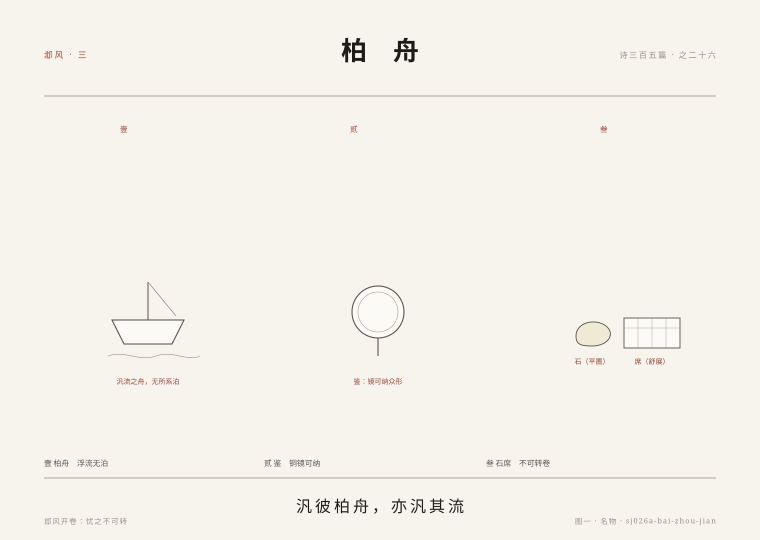
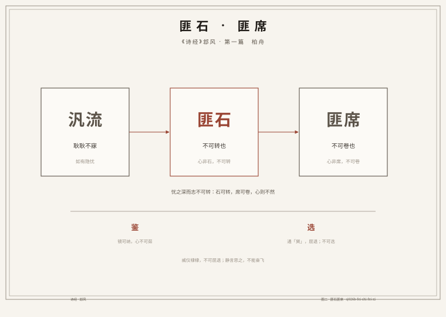

第二十六篇 柏舟
邶风 · 之三 SJ026
朗读 · 普通话
依经文正文朗读，句读从文；不配乐、不改速、不加拖腔。全库同一音色（豆包 TTS），非播音员录制。
一 解题
诗三判：
- 谁在说：一个沉忧不寐的人。他自比柏舟泛流，言心不可轉、不可卷；所亲不可据，所遭是群小之愠。
- 说什么事：夜不能寐，无以解忧；兄弟不可依，往诉逢怒；心非石非席，威仪不可屈；遭逢既多，受侮不少；思之不能奮飛。
- 为何编在此：这是邶风的开卷。召南诸篇尚是「备、敬、守、不争」；自此而气象一转——「心之忧」与「礼之失」自此起。
卷三第一篇，先立一个忧而不改其守的人，作为邶风的开端。
《毛序》：「《柏舟》，言仁而不遇也。卫顷公之时，仁人不遇，小人在侧。」——读作仁人不遇、群小在位。
朱子《诗集传》：「旧说此诗为妇人不得志于其夫而作；然其辞严正，非若《谷风》《氓》之柔媚，故学者多以为卫之仁人不遇之时所作。」——朱子并列弃妇说与仁人不遇说，而重后者。
本库的看法：两说并列——弃妇说与怀才不遇、仁人不遇说。
骨在「我心匪石，不可轉也；我心匪席，不可卷也」：忧之深，而志不可转。柏舟泛流、无可停泊，正是其人处境。此篇为邶风转关：召南守成，邶风言变；忧自此生，话自此激。
二 经文
第一章
汎彼柏舟，亦汎其流。耿耿不寐，如有隱憂。微我無酒，以敖以遊。
第二章
我心匪鑒，不可以茹。亦有兄弟，不可以據。薄言往愬，逢彼之怒。
第三章
我心匪石，不可轉也。我心匪席，不可卷也。威儀棣棣，不可選也。
第四章
憂心悄悄，慍于群小。覯閔既多，受侮不少。靜言思之，寤辟有摽。
第五章
日居月諸，胡迭而微？心之憂矣，如匪浣衣。靜言思之，不能奮飛。
分章：毛传、朱子皆五章，章六句。三章三喻递进：鉴（可纳）→
石席（可转可卷）→
威仪（不可屈）。末章以日月、浣衣收束，忧无可解，飞不能去。 ##
三 韵读
| 一 |
流、憂、遊 |
幽部 |
| 二 |
茹、據、怒 |
魚部 |
| 三 |
轉、卷、選 |
元部 |
| 四 |
悄、小；侮、摽 |
宵部；魚 / 宵 |
| 五 |
微、衣、飛 |
微部 |
一章幽部沉抑，像舟之浮流；三章元部上扬，「不可轉／不可卷／不可選」三叠最见坚立；末章微部轻收，「不能奮飛」是全篇落脚声——想飞而飞不去。
四 字义与名物
- 汎（fàn）——浮、泛。柏舟在流上漂浮，无所系泊。不是「泛滥」。
- 耿耿——不安、焦灼，不能寐之貌。不是「明亮」。
- 隐忧——深忧。隐，深。
- 微——非、不是。「微我無酒」＝非我无酒。
- 敖——同「遨」，游遨。
- 鉴——铜镜。茹——含、纳（镜能照纳众形）。
- 据——依靠。
- 薄言——语助。愬（sù）——同「诉」，告诉。
- 石可转，席可卷——石虽坚可转动，席虽平可卷起；心则不然。
- 棣棣（dì
dì）——威仪雍容闲习之貌。选（xuǎn）——通「巽」，屈退、退让。
- 悄悄——忧貌。愠（yùn）——怒、怨。群小——众小人。
- 觏（gòu）——遭逢。闵（mǐn）——忧患。
- 寤辟有摽（wù pì
piào）——醒而拊心，拊击有声。辟，拊心；摽，击。
- 居、诸——语助。迭——更迭、更代。微——隐微（日月无光）。
- 浣衣——浣濯之衣。如匪浣衣，言心之污扰，如衣之未洗。
五 今译
第一章
漂着那柏木舟，也漂浮在水流上。焦灼不能入睡，像藏着深忧。不是我没有酒，可借遨游来排遣。
第二章
我的心不是镜子，不能什么都容纳。也有兄弟，却不能依靠。前去诉说，正逢他发怒。
第三章
我的心不是石头，不可转动；不是席子，不可卷起。威仪雍容闲习，不可屈退。
第四章
忧心暗暗，被众小人所怨。遭逢忧患已多，受欺侮不少。静静想来，醒着拊心，拊击有声。
第五章
太阳啊月亮啊，为何更迭而无光？心里的忧愁，像没洗净的衣裳。静静想来，不能奋翅飞去。
译注：「匪鑒不可以茹」译「心非镜，不能纳」；「选」取屈退义，不译「选择」；「寤辟有摽」译醒而拊心击胸；「如匪浣衣」取衣未洗净之喻，不作「洗衣」字面。
六 章旨
一章：忧之起。舟浮于流，人浮于忧；酒与游都解不开。
二章：援之绝。心非镜不可含纳，兄弟不可依，往诉逢怒。
三章：守之坚。石不可转，席不可卷，威仪不可屈——全篇骨干在此。
四章：遭之酷。群小之愠，闵侮之多，拊心而摽。
五章：飞之不得。日月失光，心如污衣；思之终不能去。
五章由「忧」而「绝援」而「坚守」而「遭困」而「不能飞」：愈沉愈坚，愈坚愈困。
七 诗教
- 赋：直陈忧困与心志，鉴、石、席、舟、衣皆即事为喻，是赋而兼比。
- 观：可观一「守」。境遇可困，心不可转；此篇所立，是忧中之定。
- 群：「群小」是一群人；兄弟之亲亦在群中而不可据，可见孤立之甚。
- 怨：怨深而不失其正。愠于群小、受侮不少，是怨；末章「不能奮飛」，怨而不作反噬之辞。
八 分寸与边界
- 不可把此篇径定为弃妇之诗。弃妇说与仁人不遇说并列；诗中「兄弟」「群小」可男可女，先立身份便先入为主。
- 不可把「耿耿」解作明亮。此处是忧不能寐之不安貌。
- 不可把「茹」解作「粗糙」。它是含纳；「不可以茹」是心不能像镜那样照纳万物。
- 不可把「选」解作选择。通「巽」，屈退；「不可选」是威仪不可屈。
- 不可把「我心匪石」读作意志消沉。石可转而心不可转，正言其坚；此章是全篇主骨，不可读反。
九 存疑
- 作者身份：弃妇说（《毛序》前旧读）与仁人不遇说（毛、朱所重）并列。本库两存，取「沉忧自守之人」。
- 所刺何人：一说卫顷公，一说庄公夫人庄姜；无证，本库不指实。
- 「鉴」之制：古鉴为水器或铜镜，此篇取「可纳众形」之义，物制不深考。
- 「日居月諸」：一说叹日月更迭而己志不明，一说怨时日相催。本库取前者。
- 末章「如匪浣衣」之喻：一说心垢未浣，一说身蒙不洁；本库取心扰如污衣。
十 跨典
- 《邶风·綠衣》——同卷第二篇。彼见衣思人，此泛舟言志；皆邶风「忧」之开端，宜连读。
- 《鄘风·柏舟》「之死矢靡它」——同以柏舟起兴，彼言誓不改，此言志不转；两卷《柏舟》可对看。
- 《论语·子罕》「匹夫不可夺志也」——「不可轉、不可卷」之守，与「不可夺志」同一骨。
- 《孟子·尽心下》「圣人忧患以寤寐」——仁人不遇而忧，古有其传。
- 《楚辞·离骚》「亦余心之所善兮，虽九死其犹未悔」——忧而不改其守，后世辞赋由此一路化出。
十一 双卡与图
双卡五对：
| 汎（浮流） |
寐（不寐） |
| 鉴（可纳） |
茹（含纳，误读） |
| 石（可转） |
席（可卷） |
| 群小（愠） |
威仪（不可选） |
| 奋飞（不得） |
寤辟（拊心） |

图一 · 柏舟·鉴·石席 名物图

图二 · 匪石匪席 义理图
读图三处：
- 柏舟画一叶孤舟，不系缆：汎流之舟无所停泊；图上空水一舟，岸不必画。
- 鉴是一面铜镜：圆而可照；与石、席分置三格，物类不相混。
- 石旁不画转轮，席旁不画卷筒：「不可轉、不可卷」是反说；图上石平置、席舒展，正见其不可动。